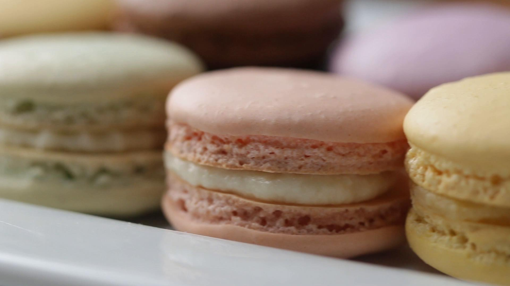

These cookies are a labor of love and we did a lot of research to perfect this recipe for you, after our own failures. Please follow as written and you will have a delicious and well-presented cookie. You may wish to experiment with different fillings. Enjoy!
